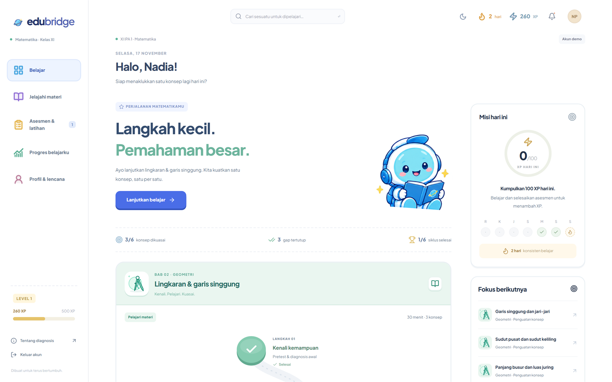
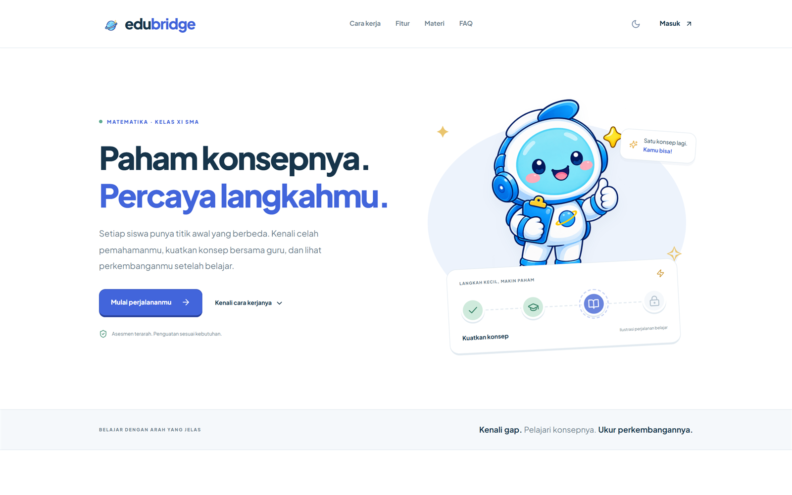
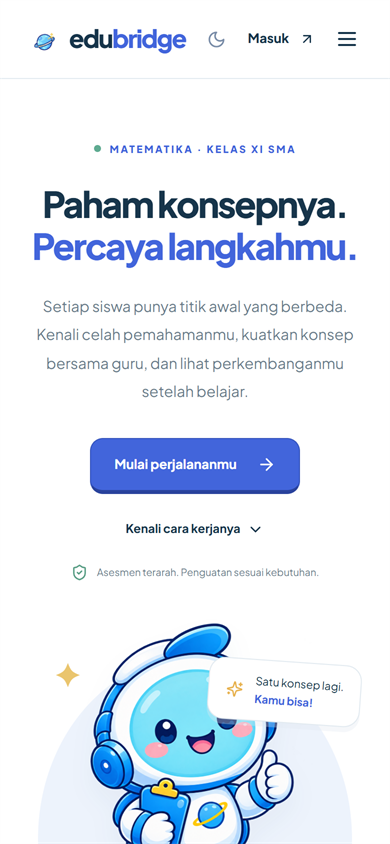
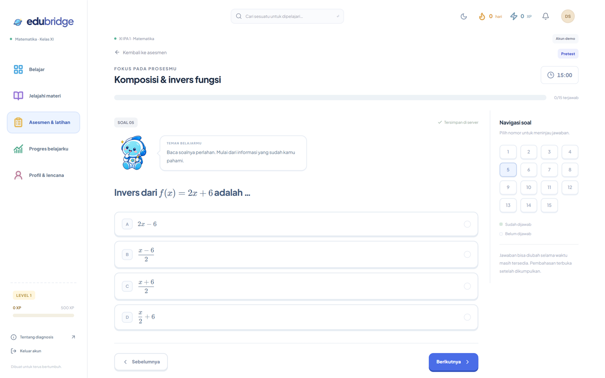
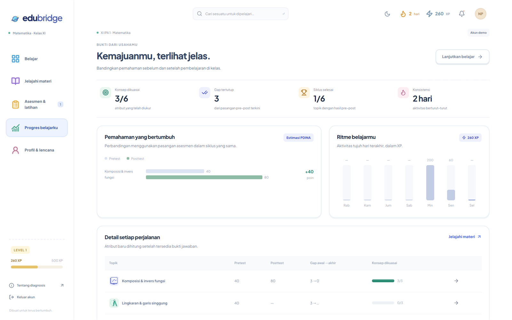
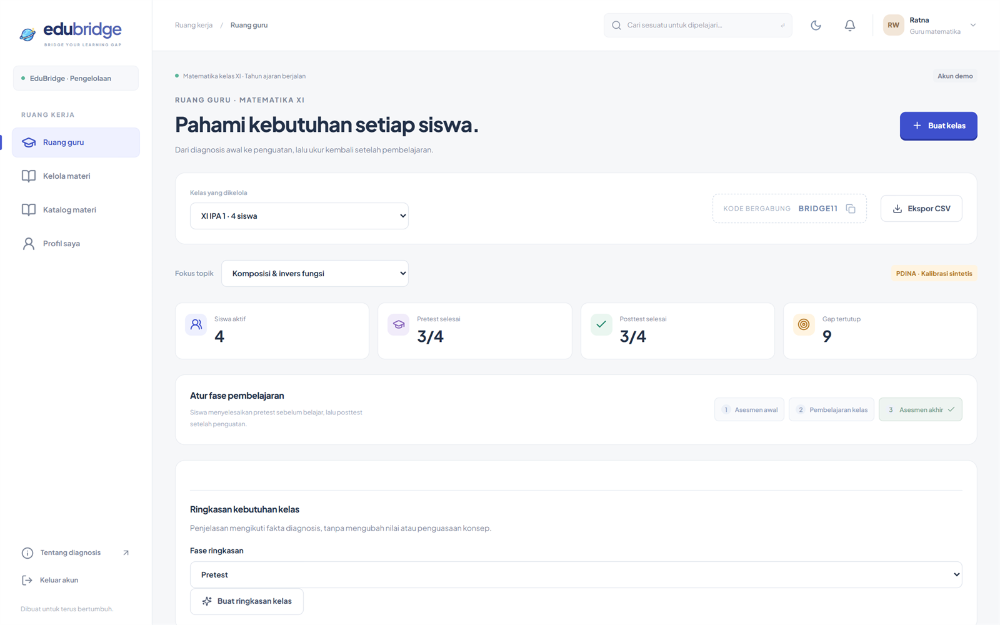
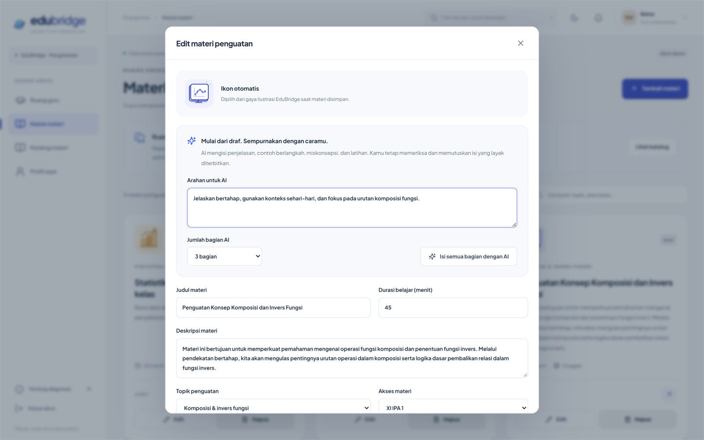
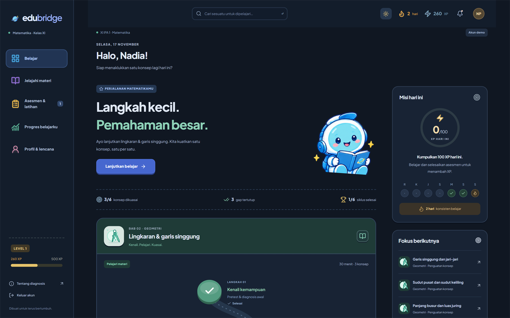
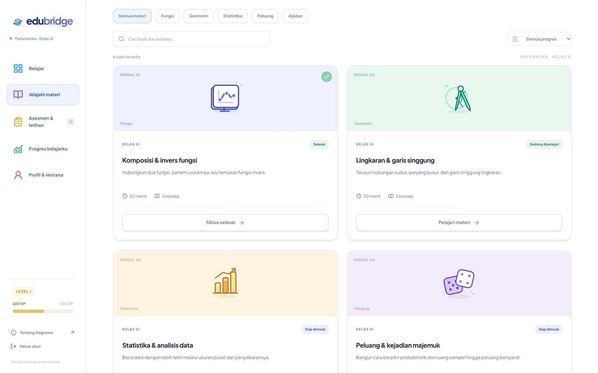
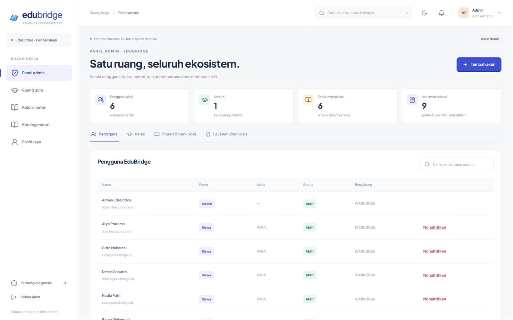

Siswa
Jalur belajar yang terasa seperti progres, bukan daftar tugas.
XP, level, streak, maskot, dan kelanjutan pembelajaran disusun agar siswa tahu langkah berikutnya.
Studi kasus · 2026
Platform yang mendeteksi learning gap Matematika kelas XI SMA dan mengarahkan penguatan konsep yang tepat untuk setiap siswa.


01 — Ringkasan
Dua siswa bisa mendapat nilai yang sama, tetapi berangkat dari titik awal yang berbeda. EduBridge memetakan penguasaan konsep lewat pretest, menjalankan diagnosis CDA dan CDM P-DINA, lalu membandingkannya dengan posttest dalam siklus yang sama.
Hasil diagnosis tidak berhenti di angka. Sistem menandai konsep yang sudah dikuasai, gap yang perlu ditutup, dan bukti yang masih kurang — lalu mengarahkan siswa ke penguatan konsep yang relevan.
Mengukur titik awal siswa pada topik yang sedang dipelajari.
CDA dan P-DINA memetakan penguasaan konsep serta gap yang perlu ditutup.
Guru mengajar dengan konteks gap yang sudah terlihat, bukan tebakan.
Materi dan latihan diarahkan ke konsep yang belum dikuasai.
Hasil dibandingkan dengan pretest dalam siklus yang sama.
02 — Peran saya
Saya memegang fondasi antarmuka yang menghubungkan alur diagnosis dengan pengalaman belajar siswa.
Fokus saya adalah membuat data yang rumit terasa bisa ditindaklanjuti: siswa tahu harus mulai dari mana, guru bisa melihat pola penguasaan, dan setiap langkah asesmen terasa jelas.
03 — Fitur utama

Siswa
XP, level, streak, maskot, dan kelanjutan pembelajaran disusun agar siswa tahu langkah berikutnya.

Asesmen
Notasi KaTeX, navigasi soal, timer, dan pembahasan setelah jawaban dikumpulkan.

Progres
Perbandingan pre/post, peta penguasaan, dan detail gap per topik dalam satu tampilan.

Guru
Guru mengatur fase kelas, memantau penguasaan, dan mengekspor data untuk ditindaklanjuti.




04 — Teknologi
Frontend adalah bagian yang saya kerjakan. Backend, model, dan deployment dikerjakan bersama tim lintas disiplin.
Antarmuka berbicara ke API aplikasi, sementara diagnosis dan narasi berjalan di layanan terpisah. Pemisahan ini membuat UI tetap bisa menjelaskan status sistem dengan jujur saat layanan AI tidak tersedia.
UI siswa, guru, dan admin
Auth, asesmen, progres
Diagnosis dan Gemini
Notasi matematika dirender dengan KaTeX di lapisan presentasi, tanpa mengubah teks soal, kunci, atau parameter model.
05 — Hasil
33 Node.js + 9 FastAPI
Desktop dan mobile
Diuji pada antrean inferensi
Audit level low
06 — Kontak
Saya terbuka untuk diskusi tentang frontend, produk edukasi, atau kolaborasi berikutnya.
soaloonpoerba13@